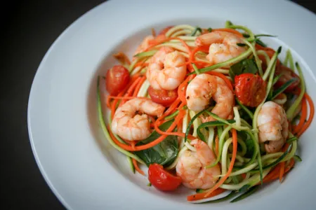

Ingredients

- 150g raw king prawns
- 1 tbsp olive oil
- 1 garlic clove, minced
- 1 pinch chilli flakes
- 1 carrot, peeled and julienned
- 10 cherry tomatoes, halved
- 1 courgette, julienned
- 1 handful basil leaves
- Salt to season
- Black pepper to season
- 1 lemon
Method
- Sauté the garlic and chilli flakes for a minute or two, just to let the garlic soften a bit - don’t let it brown. Add the prawns and sauté until they turn pink.
- Add the cherry tomatoes and carrots and cook for a minute or two until the tomatoes soften.
- Add the courgette and tear in the basil leaves. Cook until the courgette is just heated through - avoid cooking for too long or the courgette can get a bit TOO soft.
- Season with salt and pepper and a squeeze of lemon juice. Serve!